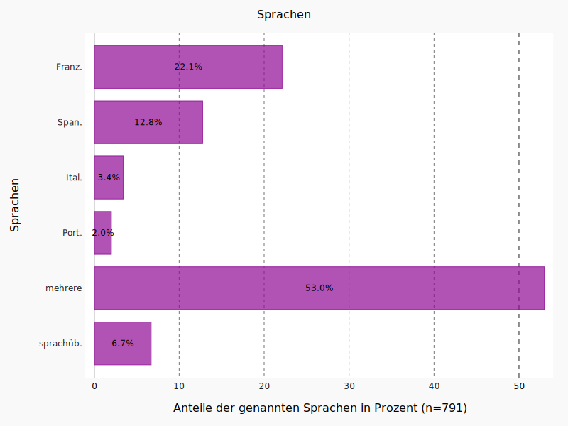
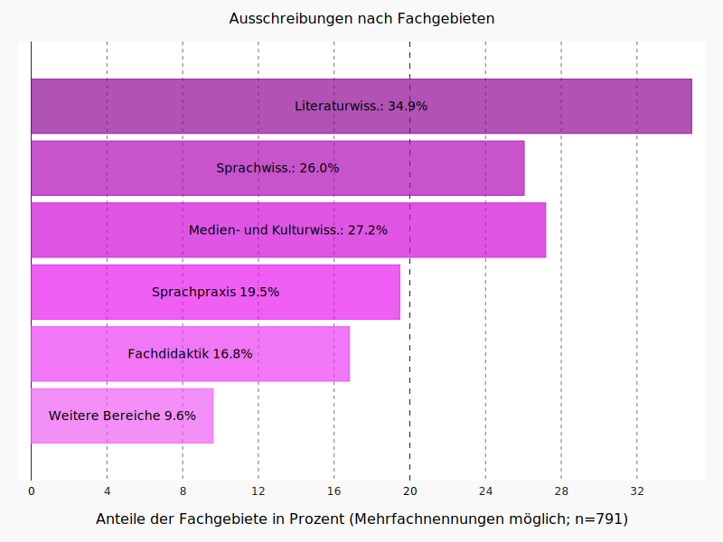
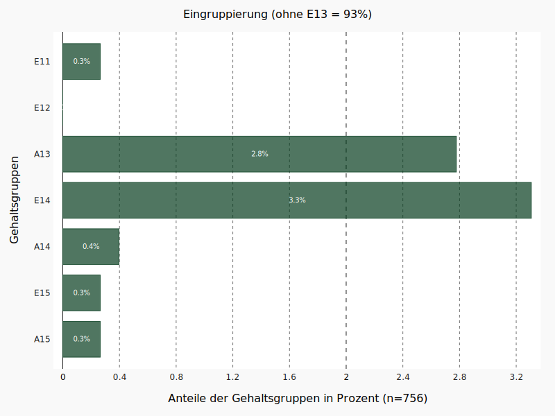
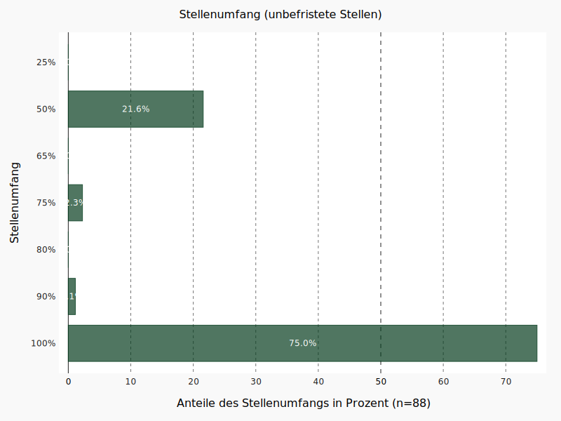
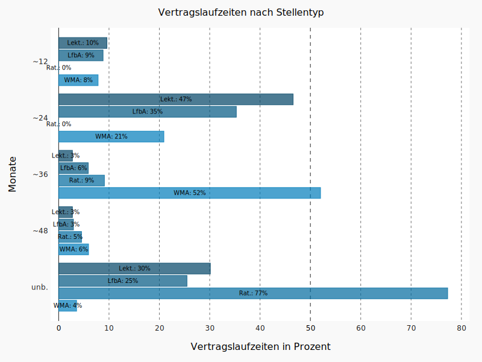
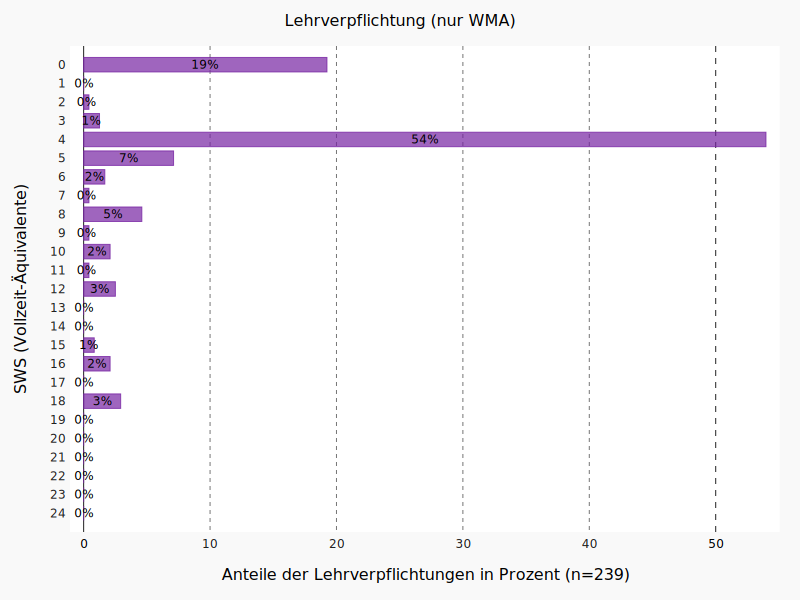
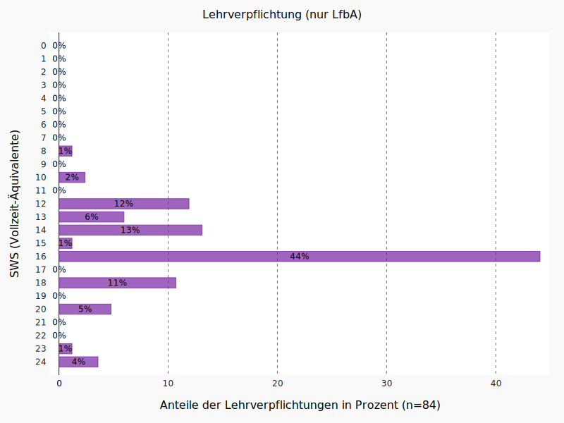
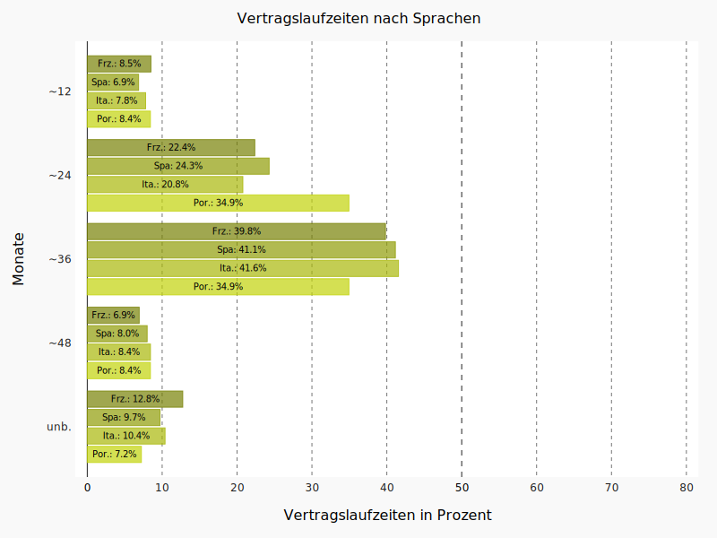
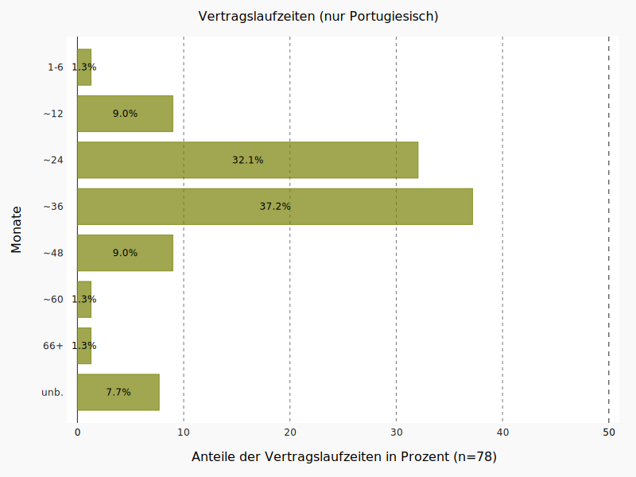

# Zur Stellensituation des Mittelbaus in der deutschen Romanistik. # Eine Analyse der Ausschreibungen auf romanistik.de in der Zeit von 2014 bis 2021 <br/> <br/> <br/>Christof Schöch (Trier) <br/>September 2021 <br/> <br/> https://christofs.github.io/romstat <br/> [](https://doi.org/10.5281/zenodo.5511180) -- ### Überblick 1. [Einleitung](#/2) 1. [Ergebnisse](#/3) 1. [Datengrundlage](#/4) 1. [Beobachtungen auf den Gesamtdaten](#/5) 1. [Laufzeiten und Stellentypen](#/6) 1. [Lehrverpflichtung und Stellentypen](#/7) 1. [Laufzeiten und Fachgebiete](#/8) 1. [Laufzeiten und Sprachen](#/9) 1. [Weitere Auswertungen](#/10) -- ## 1. Einleitung --- ### Kontext und Zielsetzung * Im Kontext der Debatten um das Wissenschafts-Zeitvertrags-Gesetz (WissZeitVG), die unter anderem in den sozialen Medien unter dem Hashtag [#IchBinHanna](https://twitter.com/search?q=%23ichbinhannah&src=typed_query&f=live) und über eine [Reihe von Stellungnahmen](#/2/2) geführt wurden und werden, erscheint eine Analyse der aktuellen Stellensituation in der deutschen Romanistik von Relevanz. * Die vorliegende Darstellung möchte hierzu einen Beitrag leisten, indem sie den aktuellen Sachstand im Bereich der Stellenausschreibungen möglichst differenziert beschreibt. * Grundlage sind knapp 800 Ausschreibungen für wissenschaftliche Stellen (ohne Professuren), die zwischen März 2014 und Juli 2021 auf romanistik.de publiziert wurden. <a href="https://romanistik.de"></a> --- ### Schwerpunkt der Auswertung * Der Fokus liegt auf den Aspekten von Vertragslaufzeit, Stellenumfang und Umfang der Lehrverpflichtung als wesentliche Faktoren für gute Rahmenbedingungen von Forschung und Lehre. * Einige der Fragen, die hier von Interesse sind * Welche Vertragslaufzeiten sind typisch? * Wie groß ist der Anteil unbefristeter Stellen? * Wie verbreitet sind Teilzeitstellen? * Wie hoch ist die Lehrverpflichtung? * Wie differenziert sich das Bild nach Stellentyp, Fachgebiet und Sprache? * Für Eilige gibt es eine [Zusammenfassung der Ergebnisse](#/3/1) --- ### Stellungnahmen zum WissZeitVG * FRV: [Stellungnahme des FRV-Vorstands zur Befristungsdebatte (#IchBinHanna)](http://francoromanistes.de/stellungnahme-des-vorstands-zur-diskussion-um-das-wissenschaftszeitvertragsgesetz/) * DHd-Verband: [Stellungnahme zur Befristungspraxis an Hochschulen und außeruniversitären Forschungseinrichtungen in Deutschland](https://dig-hum.de/stellungnahme-dhd-wisszeitvg-0621) * DfS und VDH: [Erklärung der Wissenschaftsverbände zur Reform des Wissenschaftszeitvertragsgesetzes ](https://soziologie.de/aktuell/meldungen-des-vorstands/news/erklaerung-von-wissenschaftsverbaenden) -- ## 2. Ergebnisse --- ### Ergebnisse in der Zusammenfassung * Es wurden 791 Stellenausschreibungen aus der Zeit 2014-2021 ausgewertet ([Details](#/4/2)). * Im Untersuchungszeitraum wurden 11% der Stellen unbefristet ausgeschrieben. Die Mehrheit der Stellen (über 60%) wird für 2-3 Jahre ausgeschrieben ([Details](#/5/1)). * Bei den unbefristeten Stellen handelt es sich vor allem um Lektorate und LfbA-Stellen, seltener um Ratsstellen oder WMA-Stellen ([Details](#/6/3)). * Bei weitem nicht alle Lektorats- oder LfbA-Stellen werden aber unbefristet ausgeschrieben ([Details](#/6/2)). * Die Lehrdeputate der häufig unbefristet ausgeschrieben Stellentypen sind meist hoch, insbesondere bei Lektorat und LfbA-Stellen, weniger bei Ratsstellen ([Details](#/7/1)). * Die Vertragslaufzeiten differenzieren sich etwas, wenn man die typischen romanistischen Fachgebiete unterscheidet. Vor allem die Sprachpraxis weicht ab ([Details](#/8/2)). * Fazit: Unbefristete Stellen mit einem Lehrdeputat, das Zeit für eigene Forschung lässt, gibt es in der Romanistik außerhalb der Professur nur äußerst selten. * Die detaillierte Auswertung findet sich unter: https://christofs.github.io/romstat -- ## 2. Datengrundlage --- ### Datengrundlage: romanistik.de * Die Datengrundlage der folgenden Analysen sind alle Stellenausschreibungen, die in der Zeit von März 2014 bis Juli 2021 auf der [Plattform romanistik.de im Bereich 'Wissenschaftliche Stellen'](https://romanistik.de/aktuelles/stellen/wissenschaftliche-stellen) publiziert wurden. * Ausschreibungen von Professuren, auch von Juniorprofessuren, sind nicht enthalten, ebenso wie Ausschreibungen für nichtwissenschaftliche Stellen (eine Ergänzung der Daten durch diese Stellenkategorien wäre aber denkbar). * Die Daten wurden Ende Juli 2021 erhoben. --- ### Verteilung über die Jahre <a href="img/romanistik_alle-jahre.svg"><img src="img/romanistik_alle-jahre.svg" height="450"/></a> Durchschnittlich wurden rund 100 Ausschreibungen pro Jahr berücksichtigt. --- ### Anzahl der Stellen * Insgesamt wurden 1107 Stellenanzeigen identifiziert, von denen 791 für die Auswertung berücksichtigt werden konnten. * Die übrigen Stellenanzeigen enthielten entweder stark unvollständige Angaben, oder bezogen sich auf Stellen, die nicht an einer deutschen Einrichtung ausgeschrieben waren, oder waren keine Stellen, die sich zumindest auch an romanistisch ausgebildete Bewerber:innen wenden, oder betrafen SHK/WHK-Stellen. --- ### Datengrundlage: Einschränkungen * Die Genauigkeit der Daten ist dadurch eingeschränkt, dass sich Stellenausschreibungen in bestimmten Fällen, beispielsweise im Kontext von Graduiertenkollegs, nicht nur auf eine, sondern mehrere gleichartige Stellen beziehen. Da solche Stellen meist nicht ausschließlich romanistische Profile haben, wurden diese Stellen aufgenommen, aber nur einmalig gezählt. * Die Daten sind derzeit noch nicht vollständig aufbereitet. Eine weitere Aufbereitung wird u.U. noch genauere Informationen liefern können oder Zahlen im Detail verschieben. * Leider sind für einen gewissen Anteil der Ausschreibungen auch bestimmte Informationen (insbesondere Lehrverpflichtung, teils auch Laufzeit und Einstufung) nicht verfügbar. --- ### Datengrundlage: Verfügbarkeit * Die dem derzeitigen Stand zugrunde liegenden Daten wurden im September 2021 aufbereitet. Sie sind im Ordner [data](https://github.com/christofs/romstat/tree/main/data) in diesem Repository verfügbar. --- ### Verteilung nach Sprachen <a href="img/romanistik_alle-sprachen.svg"></a> --- ### Verteilung nach Fachgebieten <a href="img/romanistik_alle-fachgebiete.svg"></a> -- ## 3. Beobachtungen auf den Gesamtdaten --- ### Vertragslaufzeiten <a href="img/romanistik_alle-befristungsdauer.svg"></a> Die Laufzeiten der ausgeschriebenen Stellen über alle Kategorien und den gesamten Untersuchungszeitraum hinweg. --- ### Vertragslaufzeiten (Kommentar) * Die Vertragslaufzeiten wurden gruppiert: Das bedeutet, dass beispielsweise die Kategorie "~24" nicht nur Stellen umfasst, die für exakt 24 Monate ausgeschrieben waren, sondern auch solche, die mindestens 18 und weniger als 30 Monate Vertragslaufzeit hatten. * Es wird ersichtlich, dass eine deutliche Mehrheit (63.2%) der Stellenanzeigen eine Vertragslaufzeit von rund 36 Monaten (37.3%) oder rund 24 Monaten (25.5%) vorsehen. Andere Laufzeiten liegen teils knapp, teils deutlich unter 10%. Der Anteil der unbefristet ausgeschrieben Stellen liegt bei 11.1%. * Dass die Ausschreibungen mit einer Laufzeit von 3 Jahren dominieren, erklärt sich sicherlich in großen Teilen durch entsprechende Laufzeiten bspw. von Doktorand:innenstellen in Graduiertenkollegs oder typischen Projektlaufzeiten bei DFG-geförderten Drittmittelvorhaben. Der hohe Anteil von Ausschreibungen mit einer Laufzeit von nur 2 Jahren erklärt sich daraus jedoch nicht. * Bei der Einordnung der Zahlen zu den unbefristeten Stellen sollte bedacht werden, dass hier die Anteile der ausgeschrieben Stellen erfasst wurden, nicht der Anteil der aktuell aktiven Wissenschaftler:innen in der Romanistik, die unbefristete Stellen innehaben. --- ### Stellentypen <a href="img/romanistik_alle-stellentyp.svg"><img src="img/romanistik_alle-stellentyp.svg" height="450"/></a> Bezüglich der Stellentypen ist insbesondere von Interesse, welche Stellentypen außer den klassischen Stellen als Wissenschaftliche/r Mitarbeitende/r in der Romanistik signifikant vertreten sind. --- ### Stellentypen (Kommentar) * Wenig überraschend ist, dass der Stellentyp der/des "Wissenschaftlichen Mitarbeiters/in" die Ausschreibungen klar dominiert (über alle Typen der WMA hinweg fast 70%). * Aber auch die Lektoratsstellen und die Lehrkräfte für besondere Aufgaben sind signifikant vertreten (gemeinsam rund 20%). * Nur kleinere Anteile bestehen für Ratsstellen und Fellowships. * (Zu beachten ist, dass die Ausdifferenzierung der verschiedenen Typen von WMA-Stellen im Datensatz noch nicht abgeschlossen ist und sich daher hier noch Verschiebungen ergeben können.) --- ### Eingruppierung (ohne E13) <a href="img/romanistik_alle-eingruppierung.svg"></a> Welche Rolle spielen Eingruppierungen jenseits der Gruppe E13 TV-L? --- ### Eingruppierung (Kommentar) * Wenig überraschend ist, dass die Gehaltsgruppe E13 nach TV-L oder äquivalent die ausgeschriebenen Stellen klar dominiert (92.7%). * Nur selten sind Stellen höher, nur ganz vereinzelt niedriger dotiert. Angesichts der Tatsache, dass die Auswertung sich auf wissenschaftliche Stellen fokussiert, waren Einstufungen unter E13 nicht zu erwarten. --- ### Stellenumfang <a href="img/romanistik_alle-stellenumfang.svg"></a> Wie verhalten sich die Teilzeit- und Vollzeitstellen zueinander? --- ### Stellenumfang (Kommentar) * Der Stellenumfang der ausgeschrieben Stellen lässt sich in drei Gruppen gliedern * Die größte Gruppe sind Stellen mit der Hälfte der regulären Arbeitszeit (38.9%); * ein Drittel der Stellen sind solche mit vollem Stellenumfang (33.5%); * die übrigen Stellen machen gemeinsam die kleinste Gruppe aus (vor allem 65%-Stellen, aber gelegentlich auch Stellen mit noch etwas höherem Umfang, zusammengenommen 27.6%). --- ### Stellenumfang (unbefristete Stellen) <a href="img/romanistik_unbefristet-stellenumfang.svg"></a> Wie hoch ist der Anteil an unbefristeten Stellen, die nicht in Vollzeit vergeben werden? --- ### Umfang der Lehrverpflichtung <a href="img/romanistik_alle-sws.svg"><img src="img/romanistik_alle-sws.svg" height="450"/></a> Wie verhält es sich beim Umfang der Lehrverpflichtung (in SWS)? (Hier umgerechnet auf Vollzeit-Äquivalente) --- ### Vorbemerkungen * Man beachte, dass der hier angegebene Umfang der SWS für jede Stelle auf das entsprechende Vollzeit-Äquivalent umgerechnet wurde, mit Rundung auf volle SWS. Ist eine 50%-Stelle mit 4 SWS ausgeschrieben, würde sie hier als eine Stelle mit einer normalisierten Lehrverpflichtung von 8 SWS berücksichtigt. * Man beachte außerdem, das nur für einen vergleichsweise kleinen Teil der Stellenausschreibungen eine Angabe zur Lehrverpflichtung in den Daten identifiziert werden konnte. (Insbesondere bei WMA-Stellen in Projekten oder zur Promotion ist oft keine Lehrverpflichtung angegeben, es ist aber nicht klar zu entscheiden, ob auch tatsächlich keine vorliegt. Solche Fälle sind hier nicht berücksichtigt, könnten den Anteil der Stellen ohne Lehrverpflichtung aber deutlich erhöhen.) --- ### Kommentar * Der am weitesten verbreitete Umfang der Lehrverpflichtung ist demnach 4 SWS oder keine Lehrverpflichtung (je rund ein Viertel der Ausschreibungen). * Dies wird gefolgt von 16 SWS und 18 SWS (zusammen rund 25%). * Hier ist eine gewisse Polarisierung zu erkennen, die sich wohl aus Lektoraten/LfbA einerseits, Promotions- und Projektstellen andererseits erklärt. * Eine weitere typische Lehrverpflichtungen ist 12 SWS. * Andere Lehrverpflichtungen machen jeweils nur kleine Anteil der Ausschreibungen aus, die Bandbreite ist groß. -- ## 4. Laufzeiten und Stellentypen --- ### Einleitung * Der Anteil der Ausschreibungen mit unbefristeter Vertragslaufzeit liegt nur bei 11.1% ([Details](#/5/1)). * Es ist daher von Interesse, wie sich die unbefristeten Stellen in die Stellentypen aufgliedern und wie verbreitet unbefristete Ausschreibungen für verschiedene Stellentypen sind. --- ### Laufzeiten nach Stellentyp (Synopse) <a href="img/romanistik_laufzeit-stellentyp-synopse.svg"></a> Hier sind für eine Auswahl von Stellentypen die typischen Vertragslaufzeiten dargestellt. (Eine genauere Auswertung folgt unten.) --- ### Verteilung der unbefristeten Stellen <a href="img/romanistik_unbefristete-stellentypen.svg"><img src="img/romanistik_unbefristete-stellentypen.svg" height="450"/></a> Hier sind die Anteile der verschiedenen Stellentypen an allen unbefristeten Stellen dargestellt. --- ### Verteilung der unbefristeten Stellen (Kommentar) * Es wird deutlich, dass eine knappe Mehrheit (54%) der unbefristet ausgeschrieben Stellen den Kategorien 'Lehrkraft für besondere Aufgaben' (28.7%) oder 'Lektorat' (25.3%) angehören. * Beide Stellenkategorien zeichnen sich in der Regel durch hohe Lehrdeputate aus ([Details](#/7/1)). * Auch die Ratsstellen (Studienrat/Studienrätin oder Akademische/r Rat oder Rätin) haben einen signifikanten Anteil (19.5%). * Ebenso wie die nicht weiter bestimmten Stellen als Wissenschaftliche/r Mitarbeiter/in (17.5%). * Die übrigen Stellen betreffen verschiedene Stellenkategorien, beispielsweise Leitungsfunktionen in Sprachenzentren oder Verlagen. --- ### Vertragslaufzeiten bei Lektoratsstellen <a href="img/romanistik_laufzeit-stellentyp-lektorat.svg"></a> Lektoratsstellen werden überwiegend entweder als 2-Jahresstellen oder als unbefristete Stellen ausgeschrieben. --- ### Vertragslaufzeiten bei LfbA-Stellen <a href="img/romanistik_laufzeit-stellentyp-lfba.svg"><img src="img/romanistik_laufzeit-stellentyp-lfba.svg" height="450"/></a> Auch LfbA-Stellen werden überwiegend entweder als 2-Jahresstellen oder als unbefristete Stellen ausgeschrieben. --- ### Vertragslaufzeiten bei Ratsstellen <a href="img/romanistik_laufzeit-stellentyp-rat.svg"><img src="img/romanistik_laufzeit-stellentyp-rat.svg" height="450"/></a> Als einzige Kategorie werden Ratsstellen erwartungsgemäß ganz überwiegend unbefristet ausgeschrieben. (Die geringe Gesamtanzahl von Ratsstellen schränkt die Aussagekraft der Zahlen etwas ein.) --- ### Vertragslaufzeiten bei WMA-Stellen <a href="img/romanistik_laufzeit-stellentyp-wma.svg"><img src="img/romanistik_laufzeit-stellentyp-wma.svg" height="450"/></a> Erwartungsgemäß werden WMA-Stellen überwiegend für 2 oder 3 Jahre ausgeschrieben. -- ## 5. Lehrverpflichtung und Stellentypen --- ### Lehrverpflichtung und Stellentypen <a href="img/romanistik_lehrverpflichtung-stellentyp-synopse.svg"></a> Zusammenfassende Darstellung der Lehrverpflichung nach Stellentypen (Anzahl SWS als Vollzeit-Äquivalent) --- ### Kommentar * Die jeweils typischen Lehrverpflichtungen sind: * bei WMA meist 4 SWS, teils auch ohne Deputat * bei Ratsstellen meist 12, aber große Bandbreite * bei Lektoraten meist 16-18 SWS * bei LfbA-Stellen meist 16, aber auch 12 oder 18 SWS * Detaillierte Auswertungen pro Stellentyp folgen unten. --- ### Lehrverpflichtung bei WMA <a href="img/romanistik_lehrverpflichtung-stellentyp-wma.svg"></a> Bei WMA dominiert die Lehrverpflichtung von 4 SWS, teils sind die Stellen auch ohne Lehrverpflichtung ausgeschrieben (bspw. Projektstellen). --- ### Lehrverpflichtung bei Lektorat <a href="img/romanistik_lehrverpflichtung-stellentyp-lektorat.svg"><img src="img/romanistik_lehrverpflichtung-stellentyp-lektorat.svg" height="450"/></a> Bei Lektoratsstellen dominieren klar die Deputate von 16 bis 18 SWS. --- ### Lehrverpflichtung bei LfbA <a href="img/romanistik_lehrverpflichtung-stellentyp-lfba.svg"></a> Bei LfbA-Stellen ist die Variation etwas größer als bei den Lektoraten, das verbreitetste Deputat ist aber klar 16 SWS. --- ### Lehrverpflichtung bei Ratsstellen <a href="img/romanistik_lehrverpflichtung-stellentyp-rat.svg"><img src="img/romanistik_lehrverpflichtung-stellentyp-rat.svg" height="450"/></a> Ratsstellen haben oft ein Deputat von 12 SWS, aber die Bandbreite ist recht hoch. -- ## 6. Laufzeiten und Fachgebiete --- ### Einleitung * Mit Blick auf die Ausdifferenzierung der Romanistik nach Fachgebieten stellt sich die Frage, ob es hier signifikante Unterschiede in der Ausschreibungspraxis gibt. * Die hier unterschiedenen Fachgebiete ergeben sich aus der auf der Plattform romanistik.de genutzten Kategorisierung. Da sich viele Ausschreibungen auf mehr als ein Fachgebiet beziehen, kann hier eine Ausschreibung in mehreren Fachgebieten gezählt werden. --- ### Laufzeiten nach Fachgebiet (Synopse) <a href="img/romanistik_laufzeit-fachgebiete-synopse.svg"></a> Die Grafik zeigt die typischsten Vertragslaufzeiten in Abhängigkeit des Fachgebiets. --- ### Kommentar * Auffällig ist einerseits die relativ große Ähnlichkeit zwischen den meisten Fachgebieten bezüglich der Dominanz von Laufzeiten von 3 sowie 2 Jahren * Aber auch die deutliche Abweichung der Sprachpraxis fällt auf, mit einem deutlich höheren Anteil entfristeter Stellen * Der Anteil der unbefristeten Stellen in Literatur- und Sprachwissenschaft ist deutlich unterdurchschnittlich. --- ### Vertragslaufzeiten bei Literaturwissenschaft <a href="img/romanistik_laufzeit-fachgebiet-lit.svg"></a> --- ### Kommentar * In der Literaturwissenschaft dominiert die Laufzeit von rund 3 Jahren (48%), mit deutlichem Abstand zur Laufzeit von rund 2 Jahren (22.6). * Unbefristet ausgeschrieben wird ein sehr kleiner Anteil der Stellen (3.3%). --- ### Vertragslaufzeiten bei Sprachwissenschaft <a href="img/romanistik_laufzeit-fachgebiet-ling.svg"><img src="img/romanistik_laufzeit-fachgebiet-ling.svg" height="450"/></a> --- ### Kommentar * In der Sprachwissenschaft dominiert ebenfalls die Laufzeit von rund 3 Jahren (39.2%) * Dies allerdings weniger deutlich als in der Literaturwissenschaft und dichter gefolgt von den Laufzeiten von rund 2 Jahren (26.8%). * Unbefristet ausgeschrieben wird ebenfalls ein sehr kleiner Anteil der Stellen (3.3%). --- ### Vertragslaufzeiten bei Medien- und Kulturwissenschaft <a href="img/romanistik_laufzeit-fachgebiet-mkw.svg"><img src="img/romanistik_laufzeit-fachgebiet-mkw.svg" height="450"/></a> --- ### Kommentar * In der Medien- und Kulturwissenschaft dominiert ebenfalls die Laufzeit von rund 3 Jahren (40.8%), ähnlich wie in der Sprachwissenschaft und ebenfalls dichter gefolgt von den Laufzeiten von rund 2 Jahren (28%). * Unbefristet ausgeschrieben wird ebenfalls ein etwas größerer Anteil der Stellen als in Sprach- und Literaturwissenschaft (8.1%). --- ### Vertragslaufzeiten bei Sprachpraxis <a href="img/romanistik_laufzeit-fachgebiet-spr.svg"><img src="img/romanistik_laufzeit-fachgebiet-spr.svg" height="450"/></a> --- ### Kommentar * In der Sprachpraxis dominiert die Laufzeit von rund 2 Jahren. * Die Sprachpraxis ist eindeutig das Fachgebiet, in dem der höchste Anteil unbefristeter Stellen ausgeschrieben werden (31%). --- ### Vertragslaufzeiten bei Fachdidaktik <a href="img/romanistik_laufzeit-fachgebiet-fdid.svg"><img src="img/romanistik_laufzeit-fachgebiet-fdid.svg" height="450"/></a> --- ### Kommentar * In der Fachdidaktik dominiert ebenfalls die Laufzeit von rund 3 Jahren (43%), mit etwas Abstand gefolgt von der Laufzeit von rund 2 Jahren (23.1%). * Unbefristet ausgeschrieben werden immerhin 11.9% der Stellen. --- ### Vertragslaufzeiten in den weiteren Bereichen <a href="img/romanistik_laufzeit-fachgebiet-andere.svg"></a> Die Kategorie "Weitere Bereiche" ist eine Sammelkategorie von romanistik.de. --- ### Kommentar * In der Kategorie 'Weitere Bereiche' überwiegt, und das gibt es nur hier, die Laufzeit von rund 2 Jahren (39.2%) über die Laufzeit von rund 3 Jahren (32.4%). * Unbefristet ausgeschrieben wird hier ein kleiner Anteil der Stellen (6.8%). -- ## 7. Laufzeiten und Sprachen --- ### Laufzeiten und Sprachen (Synopse) <a href="img/romanistik_laufzeit-sprache-synopse.svg"></a> Ebenso wie nach Fachgebieten ist auch die Ausdifferenzierung nach Sprachen gegebenenfalls von Interesse. --- ### Vertragslaufzeit bei Französisch <a href="img/romanistik_laufzeit-sprache-frz.svg"></a> --- ### Vertragslaufzeit bei Spanisch <a href="img/romanistik_laufzeit-sprache-spa.svg"><img src="img/romanistik_laufzeit-sprache-spa.svg" height="450"/></a> --- ### Vertragslaufzeit bei Italienisch <a href="img/romanistik_laufzeit-sprache-ita.svg"><img src="img/romanistik_laufzeit-sprache-ita.svg" height="450"/></a> --- ### Vertragslaufzeit bei Portugiesisch <a href="img/romanistik_laufzeit-sprache-por.svg"></a> --- ### Vertragslaufzeit bei Sprachübergreifend <a href="img/romanistik_laufzeit-sprache-div.svg"></a> -- ## 8. Weitere Auswertungen --- ### Entwicklung der Vertragslaufzeiten über die Zeit <a href="img/romanistik_jahr-dauer_barchart.svg"><img src="img/romanistik_jahr-dauer_barchart.svg" height="450"/></a> --- ### Kommentar * Die Darstellung zeigt die Anteile (in Prozent) der verschiedenen Vertragslaufzeiten in jedem der untersuchten Jahre (2014-2021). Die Vertragslaufzeiten wurden auch hier nach dem gleichen Schema wie in der obigen Analyse gruppiert. * Es zeigt sich, dass die Verhältnisse über die Jahre insgesamt relativ stabil sind, ohne klare Trends zu Anstieg oder Absinken bestimmter Vertragslaufzeiten. -- ## Zitierhinweis und Lizenz --- ### Zitierhinweis und Lizenz * Zitierhinweis: * Christof Schöch: "Zur Stellensituation des Mittelbaus in der deutschen Romanistik: eine Analyse der Ausschreibungen auf romanistik.de in der Zeit von 2014 bis 2021". Github.io, 2021. URL: https://christofs.github.io/romstat, DOI: https://doi.org/10.5281/zenodo.5511180. <br/><br/> * Lizenz: * Daten, Code und Text werden unter der Lizenz [Creative Commons Attribution 4.0 (CC BY)](https://creativecommons.org/licenses/by/4.0/) verfügbar gemacht. <br/><br/> * Danksagung * Plattform romanistik.de * Python-Community, inbesondere das pygal-Team! -- ## Datenaufbereitung --- ### Lehrverpflichtung * Angaben sind nicht strukturiert vorhanden * Angaben wurden aus dem Anzeigentext übernommen (umfang_sws) * Angaben wurden auf Vollzeit-Äquivalent umgerechnet (umfang_sws / umfang_prozent * 100 = sws_äqv), mit Rundung auf volle SWS * Oft werden keine Angaben zur Lehrverpflichtung gemacht. Dann wird "k.A." eingetragen * Oft wird nur angegeben, dass die Lehrverpflichtung sich nach dem Hochschulgesetz richtet; das wird nicht nachrecherchiert, sondern "k.A." eingetragen * Außer, wenn es eine Liste von konkreten Aufgaben gibt, in der keine Lehraufgabe vorkommt: dann wird "0" eingetragen * Oft sind keine Angaben zur Lehrverpflichtung vorhanden, es handelt sich aber um Promotionsstellen in einem Graduiertenkolleg oder um Projektstellen; hier könnte man ggfs. den Schluss ziehen, dass keine Lehrverpflichtung vorhanden ist. Das wird hier nicht fest eingetragen, könnte aber erschlossen werden. * Wird eine Spanne angegeben (bspw. "4-8 SWS"), wird der gerundete Mittelwert eingetragen (hier: 6)